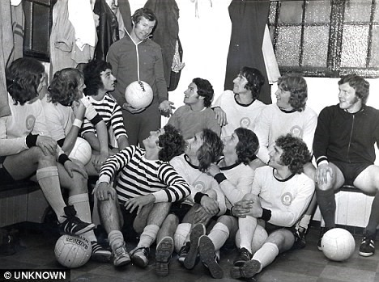

Chương 9

uy hay “quăng bom”, Ally MacLeod là người hiền lành, dễ mến.Khi Alex ngỏ ý muốn nghỉ hưu sớm, dù hãy còn một năm trong hợp đồng, ông đồng ý ngay.Không những thế, ông còn tiến cử anh cho công tác HLV tại Queen’s Park và East Stirlingshire. Alex thích Queen’s Park hơn, nhưng khi đến phỏng vấn tại Hampden Park, đứng trước ban lãnh đạo gồm toàn những người quen cũ của mình ngày xưa, anh bỗng dưng bị khớp, ấp úng nói không nên lời, nên bị đánh hỏng.East Stirlingshire trở thành lựa chọn duy nhất.
Thành phố Falkirk có hai CLB bóng đá, CLB thứ nhất dĩ nhiên là…Falkirk, thứ hai chính là East Stirlingshire. Trên trường quốc tế, chẳng ai nghe đến tên East Stirlingshire, đơn giản vì họ là đội bóng…kém nhất Scotland. Hệ thống giải VĐQG Scotland có hai hạng, thì Stirlingshire đứng bét giải hạng nhì.SVĐ của họ, Firs Park, chỉ chứa được tối đa vài ngàn khán giả, và có vỏn vẹn…297 ghế ngồi. Alex Ferguson đã khởi nghiệp HLV ở một nơi không thể tệ hơn!
Về lương bổng, East Stirlingshire chỉ đủ sức trả Alex 40 bảng một tuần, song đó không phải vấn đề, vì Alex giờ đã phong lưu, lại có thêm thu nhập từ quán rượu. Vấn đề là khi đến Firs Park trước lúc mùa giải 1974-1975 khởi tranh, vị tân HLV nhận thấy CLB chỉ còn có…tám cầu thủ, trong đó không ai là thủ môn! “Này, ông có biết là muốn đá banh thì cần đủ mười một người, cộng thêm hai cầu thủ dự bị không hả?”, Alex hỏi chủ tịch Willie Muirhead.
Đoạn trên là thuật theo hồi ký Alex Ferguson (2000). Theo Crick (2003), số lượng cầu thủ ở Firs Park có nhiều hơn một chút, không phải tám mà là mười hai, nhưng đúng là không có thủ môn. Như vậy, điều cần kíp nhất lúc này là mua thêm người.
“Ngân sách chuyển nhượng là bao nhiêu?” Alex hỏi tiếp
“2 000 bảng”, Muirhead đáp, “Chỉ có chừng đó thôi.”
2 000 bảng?Ngay cả vào thời điểm 1974, 2000 bảng cũng chẳng làm được gì.Ngân sách 2 000 bảng thì chỉ có nước đi lượm về những cầu thủ miễn phí.
Tân binh đầu tiên được đưa về Firs Park là Tom Gourlay, một anh chàng thủ môn chuyên mài quần trên ghế dự bị của Partick Thistle vì quá…béo. Gourlay đến East Stirlingshire theo dạng chuyển nhượng tự do, nhưng CLB cũng phải chi 750 bảng tiền lót tay cho anh ta. Kế tiếp là Jimmy Mullen và George Adams, đều chuyển nhượng tự do, lót tay 300 bảng mỗi người. Vậy là còn có hơn 1 000.Alex bỏ ra 900 đưa về tiền đạo Billy Hulston, và mượn thêm vài cầu thủ nữa.Sau cùng, anh cũng có đủ một đội bóng “nhìn cho ra hồn”, với 15 thành viên.
Ngày từ những ngày khởi nghiệp East Stirlingshire, Alex Ferguson đã thể hiện những phẩm chất và cá tính sau này khiến anh trở nên nổi tiếng tại Aberdeen và Manchester United. Anh đề cao lối đá tấn công,không bao giờ chấp nhận thất bại, dùng đòn tâm lý khuyến khích cầu thủ, chú trọng việc đào tạo tài năng trẻ, đòi hỏi sự hoàn hảo trong mỗi buổi tập luyện, quản lý nhân sự chặt chẽ, và áp dụng kỷ luật thép, không dung thứ bất kỳ sự chống đối nào.
Một trong những việc đầu tiên Alex thực hiện tại Firs Park là thay đổi các bài tập luyện. Anh bắt học trò mỗi ngày phải chơi “banh khờ”: Chia ra từng nhóm nhỏ năm-sáu người đứng vòng tròn chuyền bóng qua lại, trong khi hai người ở giữa vòng tìm cách lấy bóng. Sau này, Alex vẫn duy trì bài tập đó ở Old Trafford. Nhưng ở Old Trafford, “banh khờ” chỉ dùng để khởi động cho vui, còn tại Firs Park, nơi trình độ cầu thủ vô cùng tệ hại, đó là một cách rèn luyện kỹ năng, giúp người tập “nhạy bóng”, phản xạ nhanh hơn. Để nâng cao thể lực, Alex bắt cầu thủ phải tập thêm cả vào sáng thứ bảy. Vì vừa mới giải nghệ, vẫn còn sung sức, bản thân anh cũng tham gia buổi tập như một cầu thủ bình thường.
Song song với việc rèn luyện kỹ năng là siết chặt kỷ luật.Một đội bóng không kỷ luật chỉ là một tập hợp vô tổ chức, không thể làm gì nên chuyện.Jim Meakin là một trong những người nếm phải “bàn tay sắt” của Alex. Ỷ mình là con rể Bob Shaw, một thành viên trong ban lãnh đạo East Stirlingshire, Meakin tỏ ra xem thường HLV. Một hôm, anh ta xin được nghỉ tập vào thứ hai để đi Blackpool, và nhằm tăng sức nặng cho lời xin phép, nhấn mạnh: “đi Blackpool cùng Bob Shaw”.
“Anh không cần biết chú đi với ai”, Alex đáp, “Nữ hoàng rủ, chú cũng không được đi.Đến ngày tập là phải tập.”
Đến ngày thứ hai, Alex nhận được điện thoại từ Meakin, thông báo anh ta bị hư xe, không đi tập được.Song bị truy một hồi, Meakin đành phải thú nhận mình đang ở Blackpool.
“Thế thì khỏi cần về nữa.Chú hết tương lai ở đây rồi.”
Nói là làm.Meakin ngay lập tức bị “cấm vận” vô thời hạn. Bob Shaw xin hộ cho con rể, nhưng vô hiệu, đành phải đến năn nỉ chủ tịch CLB Willie Muirhead xin giúp cho.Độ vài tuần sau, Muirhead tới gặp Alex.
“Alex này”, giọng ngài chủ tịch khẩn khoản, “tha cho Meakin nhé. Lão Shaw cứ đi theo lải nhải với tôi mãi. Coi như anh vì tôi.”
Phải đến chủ tịch đích thân năn nỉ như thế, Alex mới dịu xuống, bỏ qua cho Meakin.
32 tuổi, vừa bước vào nghề, nhưng Alex đã tạo ra được cái uy.“Chúng tôi ai cũng sợ ổng”, cầu thủ McCulley kể “Tôi trước giờ chẳng sợ ai, mà vừa thấy ổng thì rét run”.Không sợ sao được khi Alex thường xuyên nổi giận đùng đùng.Cầu thủ mà đá kém thì khi vào phòng thay đồ nghỉ giữa hai hiệp, không ai dám ngóc đầu lên. Alex sẽ xạc cho họ một trận, có khi còn đá bàn đá ghế khiến ấm chén bay tứ tung.
Nhưng Alex không khi nào giận dữ đến độ mất khôn.Trái lại, khi anh giận, đó là cái giận đầy tính toán của một “cáo già” về phương diện tâm lý.Một lần, có cầu thủ nghe lén được Alex đang “thực tập” nổi giận, sau đó hỏi người bên cạnh “Giận như thế trông đã sợ chưa?” Vậy là đã rõ, sự nóng giận và những lời chửi rủa chỉ được Alex sử dụng như một liệu pháp tâm lý, nhằm kích thích cầu thủ nỗ lực hơn lên.Chẳng thế mà anh lại luôn nói “Giận dữ chẳng có gì sai, vấn đề là phải biết giận đúng lúc đúng chỗ.”
Thật vậy, Alex không phải lúc nào cũng chửi rủa cầu thủ.Anh biết khi nào cần cương, khi nào cần nhu.Khi cần cương thì anh đá đổ cả khay trà, nhưng khi cần nhu, anh cũng rất mềm dẻo. Điển hình như trận đấu trong khuôn khổ League Cup năm 1974 với Dundee, chỉ sau 45 phút hiệp một, East Stirlingshire đã bị gác 0-3. Khi cầu thủ đang cúi gầm mặt, chờ đợi những lời chì chiết, thì Alex không trách họ đến một câu. “Các em đá khá lắm”, anh khích lệ “Chẳng qua là không may thôi.Hiệp hai vẫn thắng được như thường”. Như được trút bỏ gánh nặng, East Stirlingshire đá như lên đồng trong thời gian còn lại, lội ngược dòng gỡ hòa 3-3!
Đối với từng cá nhân cầu thủ, Alex cũng có sự đối xử khác biệt.Có những người “thân lừa ưa nặng”, không đánh không mắng thì khá không nổi, với họ cần phải thật cương.Một số người khác tâm lý quá yếu, càng mắng càng mất tinh thần, với họ thì cần thật nhu.Lại có những thiên tài vượt trên thông thường, với những thiên tài ấy phải để họ tự do như chim trời (như trường hợp Eric Cantona chúng ta sẽ bàn tới sau).Alex không cần mọi người phải yêu mình, có khi anh lại tìm cách làm cho cầu thủ ghét nữa.Anh chê bai, khích tướng họ đủ điều, khiến họ nổi giận lên, thể hiện hết sức trên sân cỏ, để chứng tỏ cho anh thấy anh đã “sai”.
Ghét hay yêu, học trò không thể không nể Alex Ferguson. Dù là “nạn nhân” của Alex, Jim Meakin buộc phải thừa nhận “Thường thì ổng lúc nào cũng đúng.Ổng biết khi nào cần thay đổi thế trận, mỗi lần ổng thay người đều hết sức hiệu quả.Ông lại biết cách động viên, khiến cầu thủ phải cố gắng hết mình nữa. Khi ổng nói, không ai dám mở miệng”…
Không chỉ tập trung vào thành tích trước mắt, Alex còn để ý xây dựng thế hệ tương lai.Công tác đào tạo trẻ luôn cần thiết với bất cứ CLB nào, nhưng với đội nhà nghèo lại càng thiết yếu.Để tìm kiếm tài năng, Alex khuyến khích cầu thủ trẻ ở địa phương đến tập cùng East Stirlingshire. Có bữa, anh chi ra 40 bảng thuê xe buýt chở đội thiếu niên Glasgow United đến đá giao hữu ở Firs Park. Vài hôm sau, Muirhead gọi anh lên văn phòng:
-Alex, cho tôi biết: Tại sao anh dám tự tiện dùng tiền của CLB để thuê xe buýt?
-Tôi cũng chỉ vì tương lai đội bóng này thôi- Alex nổi điên- ông không đồng ý thì thôi, tôi trả đội lại đấy, ông đem mà đút vào đít đi!
Quẳng trả 40 bảng lên bàn, Alex hầm hầm bước ra khỏi phòng. Muirhead hối hả chạy theo:
-Alex, Alex! Nghe đã nào! Lão già Jim Hastings bắt tôi làm to chuyện này đấy chứ.Anh thông cảm, lão ấy già rồi.
Jim Hastings là thành viên già nhất trong ban lãnh đạo East Stirlingshire, và có vẻ là người duy nhất không ngán Alex. Còn thì từ chủ tịch trở xuống đều sợ anh một phép, không ai can thiệp vào công việc chuyên môn của HLV. Willie Muirhead từng nếm phải cơn thịnh nộ của Alex, khi mon men xuống băng ghế huấn luyện giữa trận đấu, lúc East Stirlingshire đang bị Rovers dẫn 2-0. Vừa kịp hỏi một câu “Bây giờ phải làm thế nào?”, Alex đã gầm lên “Đây không phải chỗ của ông. Đi ngay, không thì tôi túm cổ quẳng ra!”
Có thể nói, không việc gì, dù nhỏ đến đâu, tại Firs Park mà Alex Ferguson không quan tâm. Những năm 1970, ngay tại những CLB lớn, cầu thủ vẫn muốn ăn gì thì ăn, nhưng ở East Stirlingshire, Alex đã bắt học trò tuân thủ một chế độ dinh dưỡng nghiêm ngặt, tuyệt đối không được ăn những thứ không lành mạnh. Mọi việc trong đội, đều một tay Alex xử lý. Anh không đeo đồng hồ, vì trong anh không có khái niệm làm việc theo giờ. Khi nào xong việc thì về, thế thôi! 12 giờ đêm mới xong thì 12 giờ đêm mới về. Mà ta nên nhớ, khi hết chuyện ở CLB, Alex cũng chưa về nhà, mà tiếp tục sang làm việc tại quán Fergie’s…
Mùa 1974-1975, Falkirk đã bị rớt xuống hạng nhì, và Alex có dịp báo thù John Prentice.Giữa Falkirk và East Stirlingshire tồn tại một khoảng cách lớn, nhưng Alex biết cách động viên cầu thủ của mình.Trước khi hai đội gặp nhau, Alex đãi các học trò một bữa ở khách sạn. Anh chọn đúng khách sạn Falkirk hay đến ăn, nên hai đội chạm mặt nhau ở đấy. Khi đi ngang qua cầu thủ Falkirk, anh dặn học trò phải làm ra vẻ tự tin, nói thật to, cười thật lớn, để chứng tỏ mình không sợ, và không thèm quan tâm gì tới đối phương. Khi ngồi ăn, anh ra sức lên dây cót cho “gà nhà”:
-Các chú này, ngày xưa anh chơi cho Falkirk mà, anh biết bọn nó rõ tận răng. Toàn là đồ vô dụng cả, chẳng có gì phải sợ.Điểm mạnh, điểm yếu từng người anh nắm hết, như tên X chỉ thuận mỗi một chân này, tên Y thì không biết chuồi banh. Thế còn tên thủ môn, chú nào đối mặt với hắn thì chớ dại mà lừa, hắn lấy mất bóng đấy, phải sút ngay…
Nghe xong lời Alex, cầu thủ nào cũng tự tin hẳn lên. East Stirlingshire tạo được bất ngờ lớn: Đánh bại Falkirk 2-0.
Dưới sự dẫn dắt của Alex, đội bóng tệ nhất giải East Stirlingshire vọt lên đứng hạng tư. Thành tích đại nhảy vọt khiến người hâm mộ kéo nhau đến sân. Firs Park trước kia trung bình mỗi trận chỉ thu hút được 400 khán giả, nay tăng lên hơn 1 000. Riêng trận gặp Falkirk bán được đến 4 650 vé!Alex thậm chí bắt đầu nói về khả năng giành ngôi vô địch.
Đột nhiên, vào tháng 10-1974, Alex nhận cú điện thoại từ Willie Cunningham.Cunningham cho biết ông sắp từ chức HLV St Mirren, và đã tiến cử anh làm nguời kế nhiệm. Alex lưỡng lự: Công việc tại Firs Park đang diễn tiến rất tốt đẹp, lẽ nào lại bỏ dở giữa chừng? Nhìn trên xếp hạng giải hạng nhì, thì East Stirlingshire còn đang xếp trên St Mirren.Mặt khác, phong độ chỉ là nhất thời, nếu xét về đẳng cấp, St Mirren vẫn cao hơn hẳn.Tuy hiện tại đang đứng dưới, nhưng xét về thực lực, tài chính, lẫn cơ sở vật chất, họ đều hơn đứt East Stirling.
Không thể tự quyết định, Alex gọi cho Jock Stein xin lời khuyên.
“Thế này nhé”, Stein nói ngắn gọn, “Cậu hãy đến sân Love Street của St Mirren, ngồi đấy và quan sát, sau đó trở lại Firs Park, rồi so sánh giữa hai sân. Tự cậu sẽ tìm ra câu trả lời thôi.”
Ngụ ý của Stein đã quá rõ: Love Street có sức chứa đến hơn 50 000 người. Alex theo ý “sư phụ”, nộp đơn xin rời East Stirlingshire. Anh nắm quyền tại Firs Park vỏn vẹn 117 ngày, nhưng cũng kịp tạo nên một phép thần kỳ nho nhỏ.Khi Alex thông báo tin mình sẽ ra đi, học trò đều lặng cả người.Một bầu không khí im lặng bao trùm, cho đến khi Tom Donnelly văng tục “Khốn kiếp!”Alex không trách Donnelly, anh biết các cầu thủ rất đau lòng, bản thân anh cũng đau lòng không kém.Nhưng biết thế nào được?
Con người, ai chẳng có khát vọng vươn cao?
“Mất Ferguson là một bi kịch cho East Stirlingshire”, Willie Muirhead bùi ngùi “Anh ấy là người giỏi nhất từng đến với CLB này”.

Alex Ferguson và các cầu thủ East Stirlingshire (ảnh: dailymail.co.uk)